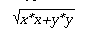

hypot - Euclidean distance function
#include <math.h> double hypot(double x, double y);
The hypot() function computes the length of the hypotenuse of a right-angled triangle:
An application wishing to check for error situations should set errno to 0 before calling hypot(). If errno is non-zero on return, or the return value is HUGE_VAL or NaN, an error has occurred.
Upon successful completion, hypot() returns the length of the hypotenuse of a right angled triangle with sides of length x and y.If the result would cause overflow, HUGE_VAL is returned and errno may be set to [ERANGE].
If x or y is NaN, NaN is returned. and errno may be set to [EDOM].
If the correct result would cause underflow, 0 is returned and errno may be set to [ERANGE].
The hypot() function may fail if:
- [EDOM]
- The value of x or y is NaN.
- [ERANGE]
- The result overflows or underflows.
No other errors will occur.
None.
The hypot() function takes precautions against overflow during intermediate steps of the computation. If the calculated result would still overflow a double, then hypot() returns HUGE_VAL.
None.
isnan(), sqrt(), <math.h>.
Derived from Issue 1 of the SVID.